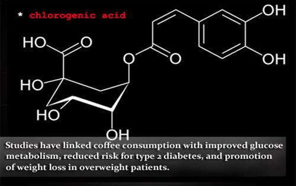
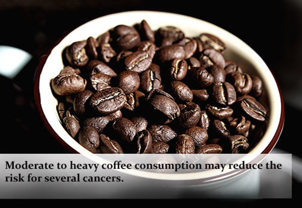
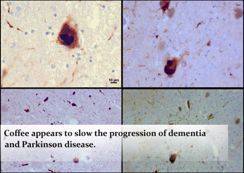

В проведённых исследованиях была продемонстрирована связь употребления кофе с улучшением метаболизма глюкозы, снижением риска развития сахарного диабета 2 типа и стимуляцией потери массы тела у пациентов с избыточным весом. Употребление кофе в умеренных или больших объёмах позволяет уменьшить риск возникновения нескольких видов рака; также кофе способствует замедлению прогрессирования деменции и болезни Паркинсона.
Диабет и снижение массы тела

* В исследованиях продемонстрирована связь употребления кофе с улучшением метаболизма глюкозы, снижением риска развития сахарного диабета 2 типа и стимуляцией потери массы тела у пациентов с избыточным весом
Несмотря на взаимосвязь между употреблением кофе и повышением артериального давления, чашечка дымящегося кофе обладает рядом неоспоримых достоинств в борьбе с «метаболическим синдромом» —- грозным союзником гипертензии, гипергликемии, повышенного уровня липидов и увеличения содержания жира в организме. Многочисленные исследования установили связь между регулярным употреблением кофе с улучшением обмена углеводов, секреции инсулина, и, соответственно, существенным снижением риска развития сахарного диабета 2 типа. Предварительные данные текущего исследования также показывают, что употребление кофе может способствовать снижению массы тела. Пациенты с избытком массы тела, которых лечили с помощью необжаренных зёрен кофе, дополнительно потеряли, в среднем, 17 фунтов за 22 недели. Авторы исследования предположили, что такой эффект мог быть частично связан с содержанием хлорогеновой кислоты в кофе, вещества с антиоксидантными свойствами, позволяющим снизить потребление глюкозы.
Онкопатология

* Употребление кофе в умеренных или больших объёмах позволяет уменьшить риск возникновения нескольких видов рака
Употребляя такое большое количество продуктов питания, повышающих риск появления рака — сода, мясо на гриле, все маринованные продукты — мы можем спокойно вздохнуть, по крайней мере, когда дело доходит до кофе (во всяком случае, согласно последним данным). Полученные данные показывают, что употребление кофе в умеренных или больших объёмах позволяет снизить риск возникновения многих видов рака, включая онкологию эндометрия (более 4 чашек в день), предстательной железы (6 чашек в день), головы и шеи (4 чашки в день), базально-клеточную карциному (более 3 чашек в день), а также рак молочной железы без рецепторов к эстрогену (более 5 чашек в день). Полезные эффекты кофе, по меньшей мере, частично опосредованы наличием у него антиоксидантных и антимутагенных свойств.
Дегенерация нервных волокон

* Кофе способствует замедлению прогрессирования деменции и болезни Паркинсона
Хорошо известно, что кофе временно ускоряет мыслительные процессы — попробуйте начать утро без чашечки кофе. Однако появились исследования, свидетельствующие о более длительном влиянии кофе на мыслительную деятельность. Исследование, опубликованное в Journal of Alzheimer's Disease, показало, что у пациентов с умеренными когнитивными нарушениями и уровнем кофеина плазмы >1200 нг/мл (позволялось от 3 до 5 чашек кофе в день) прогрессирование деменции не происходило в течение следующих 2-4 лет. Соответствующие исследования на мышах показывают, что кофеин подавляет ферменты, участвующие в образовании бета-амилоида, в то время как употребление кофе повышает уровни гранулоцитарного колониестимулирующего фактора, интерлейкина-10 и интерлейкина-6, а цитокины также способствуют проявлению вышеописанных свойств. Содержащий кофеин кофе уже давно считается нейропротектором для лечения болезни Паркинсона, а современные исследования свидетельствуют, что изменения в гене GRIN2A, кодирующем глутаматные рецепторы, влияют на риск развития болезни Паркинсона у людей, употребляющих кофе. Кроме того, данные, представленные в этом году на Ежегодной конференции Американской Академии Неврологии, показали, что употребление 3 чашек кофе в день позволяет предотвратить образование телец Леви — доклинических патологических изменений при болезни Паркинсона. Несмотря на обнадёживающие результаты при нейродегенеративных заболеваниях, приём кофеина также был связан с уменьшением возраста дебюта болезни Хантингтона.